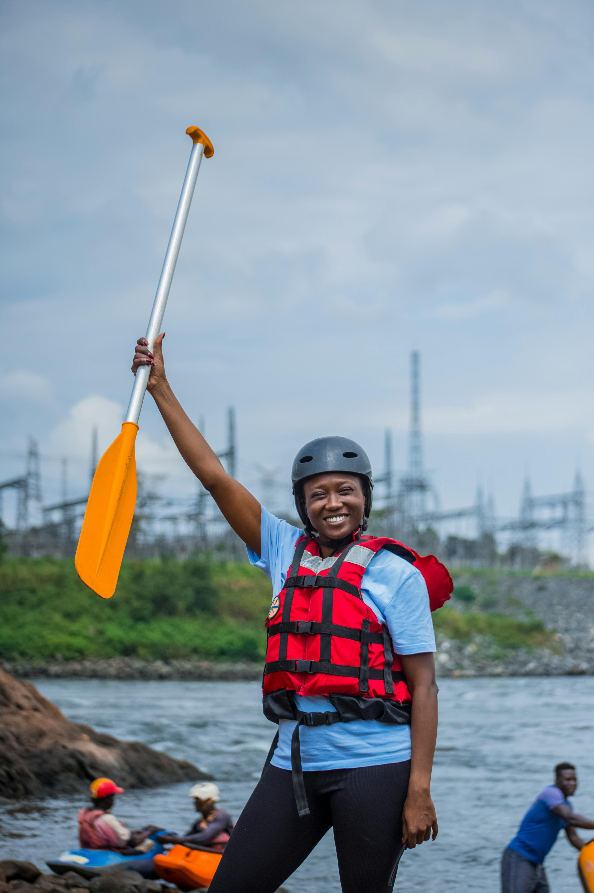
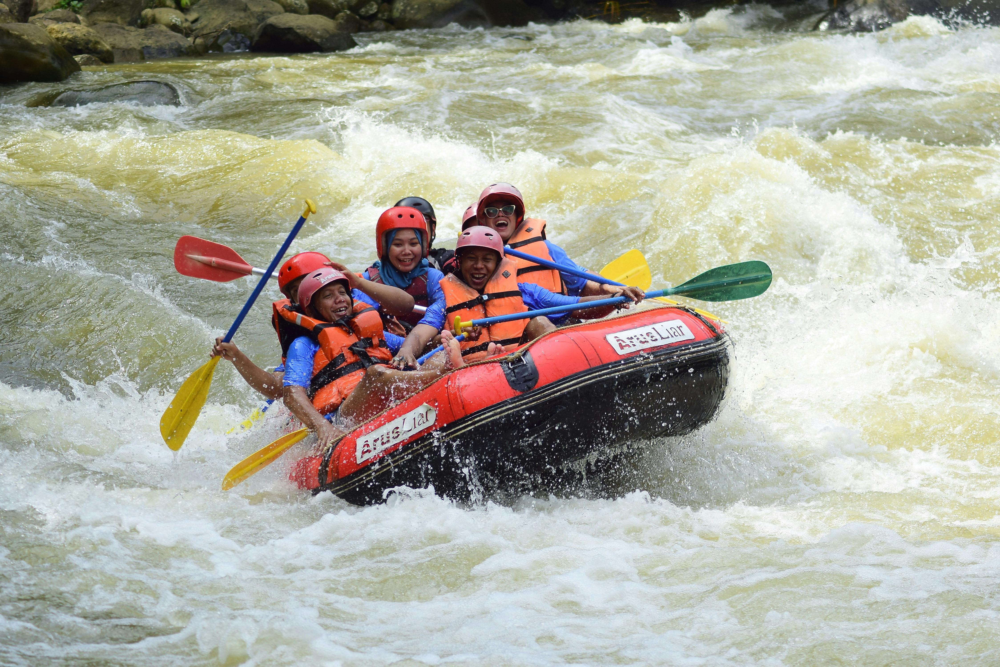
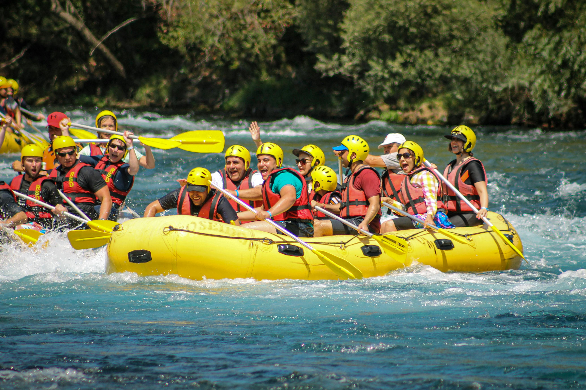
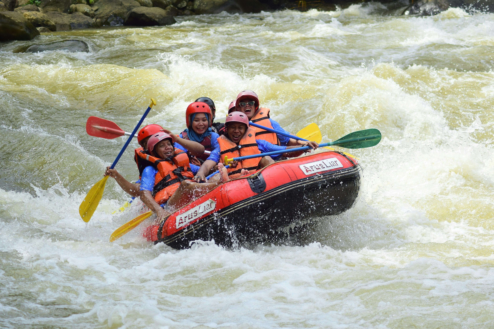
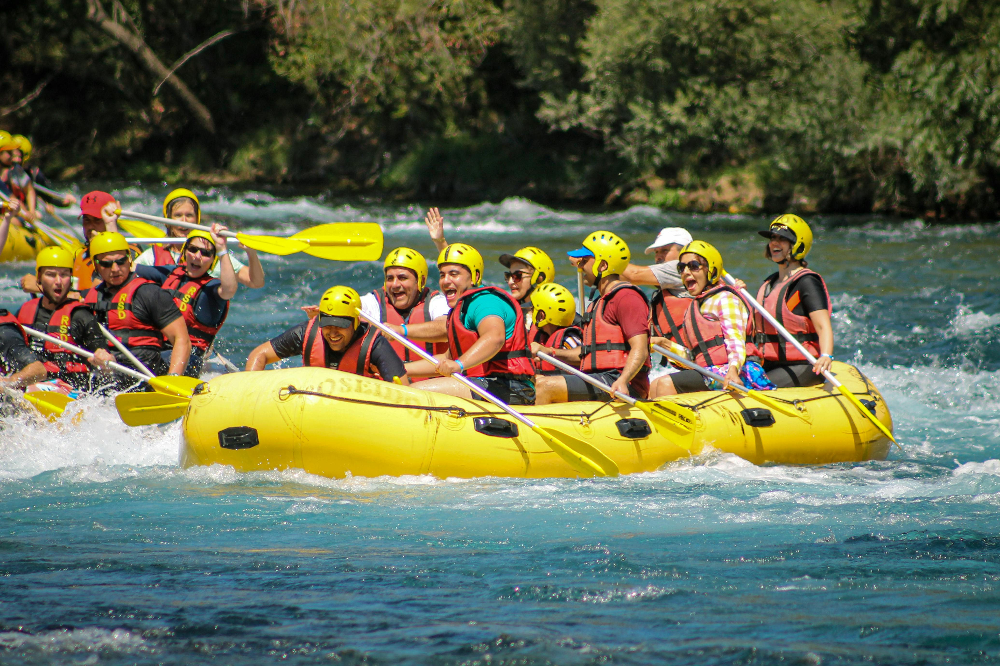

At BrookeBound Rapids, our mission is to deliver safe, exciting, and eco-friendly rafting experiences that bring families together. We are committed to the highest standards of safety, exceptional customer service, and environmental stewardship, ensuring every adventure is both thrilling and sustainable.
BrookeBound Rapids
History
Riverbond Rafting was founded in 2005 by outdoor enthusiasts and married couple, Sarah and Jake Brooke, inspired by their love for the rivers of Utah and a passion for sharing white water rafting adventures. Starting with a single raft, they aimed to provide safe, family-friendly experiences. By 2011, the company had expanded its fleet, hired experienced guides, and introduced popular packages for family reunions and corporate retreats. In 2016, they committed to environmental sustainability with eco-friendly practices and partnerships with local conservation organizations. Today, Riverbond Rafting is a leader in family-oriented rafting, known for its exceptional service, safety, and commitment to preserving natural waterways. Looking ahead, they plan to expand offerings with multi-day excursions and educational programs.
Adventure Awaits You!
 


